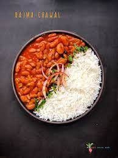

Rajma Chawal
What is Rajma Chawal?
Rajma chawal is a favorite combo in many North Indian households where rajma masala is served with chawal (rice) and some onion & lemon wedges on the side

List of Ingredients :
Steps:
- Soak the beans overnight
- Cook the beans, in a pressure cooker or heavy bottom pot , till they are completely soft.
- Cook with Spicies
- Cook the rice